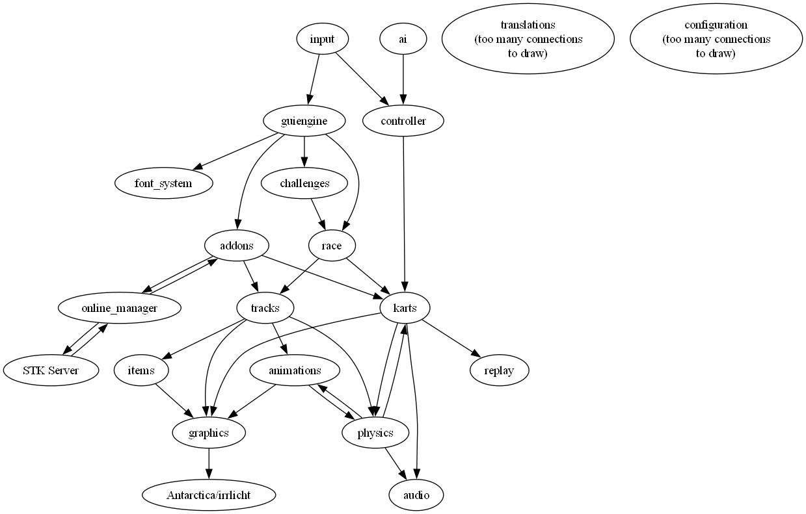

로딩중...
검색중...
일치하는것 없음
SuperTuxKart developer documentation
This document contains the developer documentation for SuperTuxKart, including the list of modules, the list of classes, the API reference, and some pages that describe in more depth some parts of the code/engine.
Overview
Here is an overview of the high-level interactions between modules :

Note that this graph is only an approximation because the real one would be much too complicated :)
Modules
- Add-ons : Handles add-ons that can be downloaded.
- Animations : This module manages interpolation-based animation (of position, rotation and/or scale)
- Audio : This module handles audio (sound effects and music).
- Challenges : This module handles the challenge system, which locks features (tracks, karts modes, etc.) until the user completes some task.
- Config : This module handles the user configuration, the supertuxkart configuration file (which contains options usually not edited by the player) and the input configuration file.
- Font : This module stores font files and tools used to draw characters in STK.
- Graphics : This module contains the core graphics engine, that is mostly a thin layer on top of irrlicht providing some additional features we need for STK (like particles, more scene node types, mesh manipulation tools, material management, etc...)
- Guiengine : Contains the generic GUI engine (contains the widgets and the backing logic for event handling, the skin, screens and dialogs). See module States_screens for the actual STK GUI screens. Note that all input comes through this module too.
- Guiengine/Widgets : Contains the various types of widgets supported by the GUI engine.
- Input : Contains classes for input management (keyboard and gamepad)
- Io : Contains generic utility classes for file I/O (especially XML handling).
- Items : Defines the various collectibles and weapons of STK.
- Karts : Contains classes that deal with the properties, models and physics of karts.
- Karts/controller : Contains kart controllers, which are either human players or AIs (this module thus contains the AIs)
- Modes : Contains the logic for the various game modes (race, follow the leader, battle, etc.)
- Physics : Contains various physics utilities.
- Race : Contains the race information that is conceptually above what you can find in group Modes. Handles highscores, grands prix, number of karts, which track was selected, etc.
- States_screens : Contains the various screens and dialogs of the STK user interface, using the facilities of the guiengine module. Also contains the stack of menus and handles state management (in-game vs menu).
- Tracks : Contains information about tracks, namely drivelines, checklines and track objects.
- tutorial : Work in progress
생성시간 : , 프로젝트명 : SuperTuxKart, 생성자 :